01だれでも
開いて、読むだけ。
同僚から、あるいは AI から受け取った .md を、何の準備もなく読めます。見出しから目次が自動で組まれ、外部エディタで保存すればその場で再読込。フォルダごと渡されたときは、ファイルツリー付きのワークスペースとして開きます。
- 目次サイドバー
- ファイル関連付け
- 保存を検知して再読込
- 単独 HTML / PDF 書き出し

スタンドアロン Markdown プレビューア
.md をダブルクリックするだけ。図も数式も Marp スライドも縦書きの文庫レイアウトも、インストールした直後から 完全オフラインで表示できます。
Windows 10 / 11 専用です。 macOS・Linux には対応していません。
管理者権限は要りません。ユーザー単位で入ります。
.md をダブルクリックドラッグ＆ドロップ、フォルダの右クリックでも開けます。
使い慣れたエディタで保存すると、その場で描き直します。
USE CASES
機能の数より、どう効くか。よく使われている 5 つの場面を挙げます。
01だれでも
同僚から、あるいは AI から受け取った .md を、何の準備もなく読めます。見出しから目次が自動で組まれ、外部エディタで保存すればその場で再読込。フォルダごと渡されたときは、ファイルツリー付きのワークスペースとして開きます。
02プレゼンする人へ
冒頭に marp: true と 1 行書けば、その文書はもう 16:9 のスライドです。P で「1 枚ずつ / サムネイル一覧 / 縦並び」を切り替え、Z でレーザーポインタ。下にはみ出した本文は見出しを固定したまま自動で縮み、PDF は 1 ページ 1 スライドで出ます。


03研究する人へ
KaTeX がインラインもディスプレイも組みます。数式を右クリックすれば MathML と LaTeX をコピーでき、Word にそのまま貼れます。内蔵エディタには YaTeX 風の入力支援 — $+Tab、\begin{}+Tab、a.→\alpha。可換図式は tikz-cd をそのまま書けば、WASM 版 TeX がオフラインで組みます。ファインマン図も平面・立体の幾何作図も、同じように書いた分だけ図になります。


04書く人へ
付属テーマ bunko.css を選ぶと、本文は 1 行 39 字 × 16 行の縦組みページに流し込まれ、ページの地にノンブルが入ります。段落は本物の本と同じようにページをまたいで割れる。字数と行数を見ながら書けて、ルビも振れます。字数・行送り・書体は歯車から動かせて、その場で組み直します。

05こだわる人へ
内蔵エディタは Vim キーバインドに対応し、w b e は漢字・ひらがな・カタカナの切れ目で止まります。そして Dvorak 配列エミュレータを使っている人のために、コマンドモードのキーだけを、押した物理キーの QWERTY 位置で解釈できます。文章の入力は Dvorak のまま。
:set dvorakdd dw gg 3j [[ のような複数キーや回数指定もそのまま。インサートモードと : / の入力は Dvorak のままです。

THE LITTLE THINGS
素の Markdown で足りないときの記法とエンジンを、ひととおり揃えました。追加インストールもネットワークも要りません。
::: center / ::: columns本体実装
描画の中身は、上に挙げた各オープンソースプロジェクトの成果です。タイルをクリックすると本家のサイトへ移動します。ライセンス全文はアプリに収録してあり、ヘルプ（H）→ サードパーティ表記から読めます。作者のみなさんに感謝します。ほかに CSV / TSV 表、脚注、定義リスト、タスクリスト、機密透かしなども使えます。
SEE IT
それぞれ、書く Markdown と、プレビューでの見え方です。どれも追加の設定なしで、そのまま出ます。
｜吾輩《わがはい》は{猫|ねこ}である。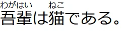
```csv
項目,Q1,Q2,Q3
売上,120,150,170
利益,30,42,55
```ウェルギリウス『アエネーイス』の一節を、原文と訳で並べます。
::: columns
### Aeneis I, 462
sunt lacrimae rerum et mentem mortalia tangunt.
+++
### アエネーイス 第 1 歌 462
ものにも涙があり、人の世のはかなさが心を打つ。
:::
`:::` で 1 カラムに戻るので、この段落はまた幅いっぱいに流れます。```abc
X:1
T:きらきら星
M:4/4
L:1/4
K:C
C C G G | A A G2 | F F E E | D D C2 |
```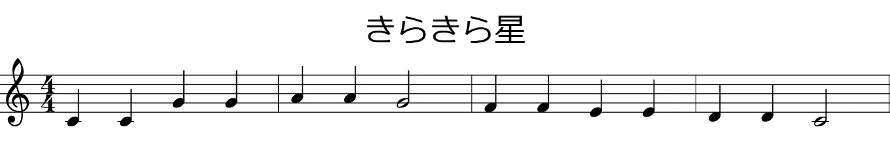
```markwhen
---
title: プロジェクト計画
#design: blue
#dev: green
---
# 企画
2023-01-01 / 2023-02-15: 要件定義 #design
2023-02-01: キックオフ
# 開発
2023-03-01 / 2023-06-30: API 実装 #dev
```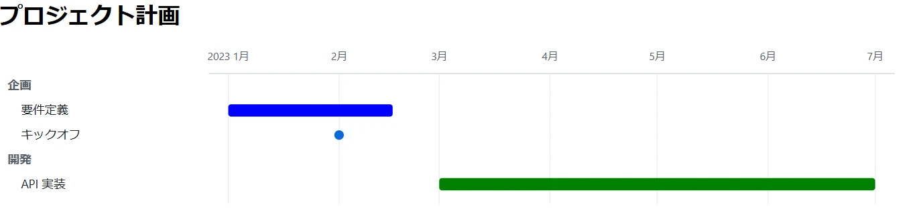
```markwhen
---
title: 4月の予定
display: calendar
country: JP
#plan: blue
#trip: green
---
2024-04-03: 企画会議 #plan
2024-04-08 / 2024-04-12: 出張 #trip
2024-04-22: 締め切り
```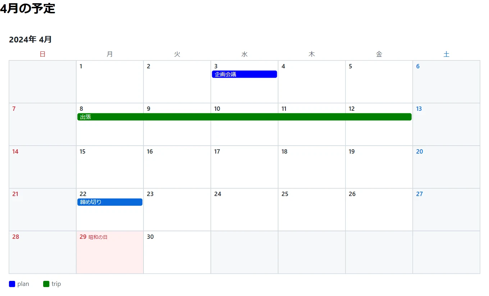
```mermaid
flowchart LR
A[編集] --> B{保存}
B -->|marp: true| C[スライド]
B -->|通常| D[プレビュー]
```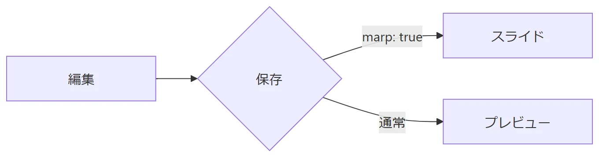
```plotly
file: data/sales.csv
type: line
x: month
y: revenue
```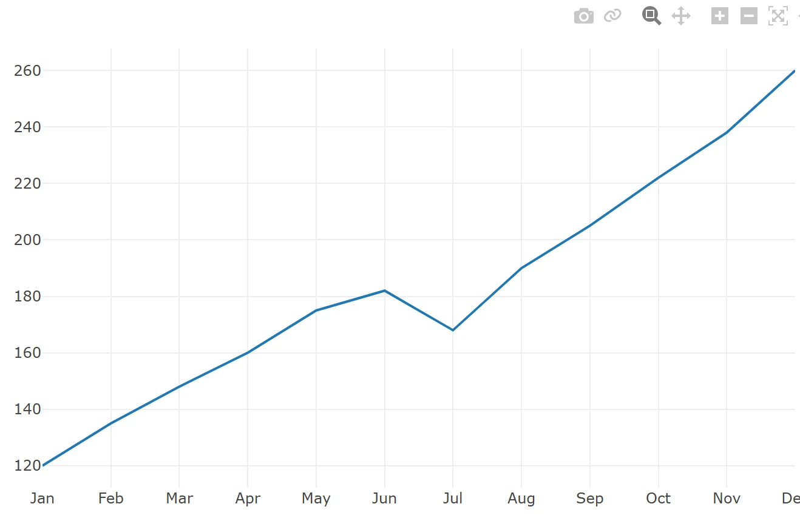
$$
x = \frac{-b \pm \sqrt{b^2 - 4ac}}{2a}
$$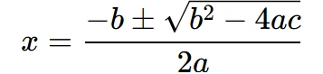
```tikzcd
A \arrow[r, "f"] \arrow[d, "g"'] & B \arrow[d, "h"] \\
C \arrow[r, "k"'] & D
```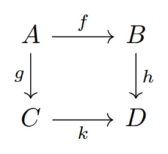
```kataskeve
viewport: -1 -1 5 4
A = point(0, 0); B = point(4, 0); C = point(4, 3)
triangle(A, B, C)
A; B; C
label A "A" pos=SW
label C "C" pos=NE
mark right_angle(A, B, C)
mark angle(B, A, C) arcs=1 radius=0.8
```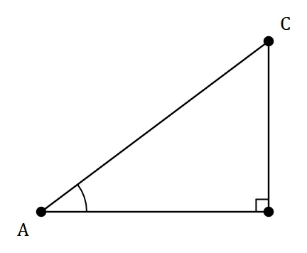
```kataskeve3d
view: tilt=18 yaw=0
unit: 150
shading: on
light: az=150 el=35
penrose_triangle(point(0,0,0), 3)
```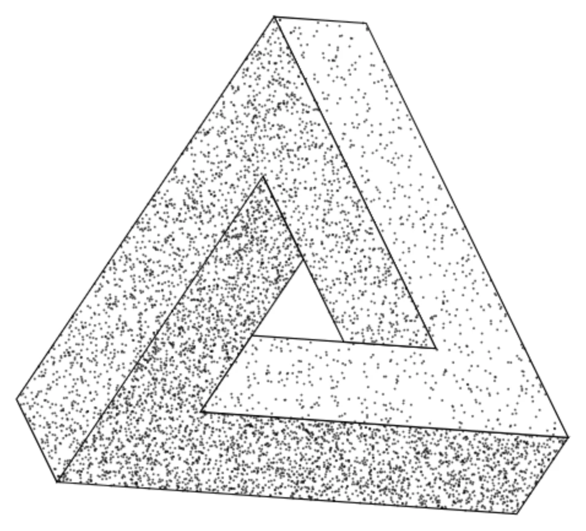
```feynman
diagram tree {
in e1: $e^-$, e2: $e^+$
out m1: $\mu^-$, m2: $\mu^+$
e1 -- [fermion] a -- [fermion] e2
a -- [photon, momentum=$q$] b
m2 -- [fermion] b -- [fermion] m1
}
```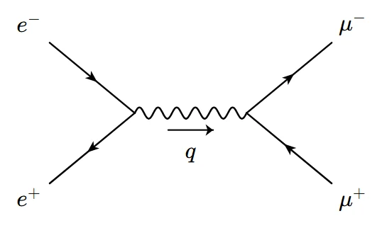
画像はどれも、添えたソースをこのプレビューアで実際に描画したものです。カレンダーの祝日はオンラインのときだけ取得します（取れなければ祝日なしで描きます）。縦書き・文庫組みの例は上の「文庫のかたちで、書く。」を、スライドの例は「Markdown のまま、発表する。」をご覧ください。
ONE KEY EACH
表示の切り替えも書き出しも、キー 1 つです。
Marp 文書のときだけ効きます。下の 4 つはデッキ表示中のみ。
プレビューで E を押すと開きます。Vim キーバインドは ⚙ 設定 でオンにします。
:w / :wq）:fontsize でも）gsi / gsy / gsd）gti / gtc）--- 区切りの Jupyter 風セルモードを切り替え、セルを実行して次へ（:cellmode でも）:set dvorak で Dvorak 配列にも対応）上の 3 つは、アプリの中で H を押すと出る一覧と同じものです。エディタの欄は主なものだけで、セルモードや Vim の全キー、ex コマンドの一覧はエディタの ⚙ 設定 と README でご覧いただけます。
GET IT
インストーラは %LOCALAPPDATA% の下に入るので、管理者権限は要りません。アンインストールは Windows の「設定 → アプリ」から。